Performance Metrics
Comprendre et choisir les bonnes métriques pour évaluer un modèle de Machine Learning, en régression comme en classification — et maîtriser l'algorithme KNN ainsi que l'analyse d'erreurs.
- Cheatsheet — Performance Metrics
- ️ Récapitulatif — Erreurs clés à éviter
- 1) Rappels — Data Preprocessing
- 2) K-Nearest Neighbors (KNN)
- 3) Cycle de vie du modèle & Baseline
- 4) Métriques de régression
- 5) Métriques de classification
- 6) Tradeoff Precision–Recall & Ajustement du seuil
- 7) ROC-AUC
- 8) Analyse d'erreurs
- Ressources
Comprendre et choisir les bonnes métriques pour évaluer un modèle de Machine Learning, en régression comme en classification — et maîtriser l'algorithme KNN ainsi que l'analyse d'erreurs.
📋 Cheatsheet — Performance Metrics
KNN
from sklearn.neighbors import KNeighborsClassifier, KNeighborsRegressor
## Classification KNN
knn_clf = KNeighborsClassifier(n_neighbors=5, weights='uniform', p=2) # K=5, distance euclidienne
knn_clf.fit(X_train, y_train)
knn_clf.score(X_test, y_test) # accuracy par défaut
## Régression KNN
knn_reg = KNeighborsRegressor(n_neighbors=5)
knn_reg.fit(X_train, y_train)
knn_reg.score(X_test, y_test) # R² par défautBaseline
from sklearn.dummy import DummyRegressor, DummyClassifier
## Baseline régression : prédit toujours la moyenne
baseline = DummyRegressor(strategy="mean")
baseline.fit(X_train, y_train)
baseline.score(X_test, y_test) # → ~0.0 (R² proche de 0)
## Baseline classification : prédit toujours la classe majoritaire
baseline_clf = DummyClassifier(strategy="most_frequent")
baseline_clf.fit(X_train, y_train)
baseline_clf.score(X_test, y_test) # → précision trompeuse si classes déséquilibréesMétriques de régression
from sklearn.metrics import mean_squared_error, mean_absolute_error, r2_score, max_error
import math
mse = mean_squared_error(y_true, y_pred) # Pénalise fortement les grandes erreurs
rmse = math.sqrt(mse) # MSE dans l'unité du target
mae = mean_absolute_error(y_true, y_pred) # Erreur moyenne absolue, robuste aux outliers
r2 = r2_score(y_true, y_pred) # Part de variance expliquée [0, 1]
me = max_error(y_true, y_pred) # Plus grande erreur commise par le modèleMétriques de classification
from sklearn.metrics import accuracy_score, precision_score, recall_score, f1_score
accuracy = accuracy_score(y_true, y_pred) # (TP+TN) / total
precision = precision_score(y_true, y_pred) # TP / (TP+FP) — évite les fausses alarmes
recall = recall_score(y_true, y_pred) # TP / (TP+FN) — capture tous les positifs
f1 = f1_score(y_true, y_pred) # Moyenne harmonique precision/recallMatrice de confusion
import pandas as pd
results_df = pd.DataFrame({"actual": y_true, "predicted": y_pred})
confusion_matrix = pd.crosstab(index=results_df['actual'], columns=results_df['predicted'])
## Affiche : lignes = valeurs réelles, colonnes = valeurs préditesCourbe Precision-Recall & seuil
from sklearn.metrics import precision_recall_curve
from sklearn.model_selection import cross_val_predict
## Obtenir les probabilités en cross-validation
proba = cross_val_predict(model, X, y, cv=5, method='predict_proba')
proba_positive = proba[:, 1] # probabilités de la classe positive
## Calculer la courbe
precision, recall, thresholds = precision_recall_curve(y_true, proba_positive)
## Trouver le seuil garantissant recall >= 0.8
scores_df = pd.DataFrame({'threshold': thresholds, 'precision': precision[:-1], 'recall': recall[:-1]})
optimal_threshold = scores_df[scores_df['recall'] >= 0.8].threshold.max() # → ~0.31
## Prédire avec seuil personnalisé
def custom_predict(X, threshold):
probs = model.predict_proba(X)[:, 1] # probabilités classe positive
return (probs > threshold).astype(int) # convertit en 0/1 selon le seuilROC-AUC
from sklearn.metrics import roc_curve, roc_auc_score
fpr, tpr, thresholds = roc_curve(y_true, proba_positive) # taux FP et VP par seuil
auc_score = roc_auc_score(y_true, proba_positive) # aire sous la courbe ROC → ~0.91Cross-validation avec métriques multiples
from sklearn.model_selection import cross_validate
cv_results = cross_validate(
model, X, y, cv=5,
scoring=['r2', 'neg_mean_absolute_error', 'neg_mean_squared_error', 'max_error']
) # retourne un dict avec les scores par fold pour chaque métrique
cv_results['test_r2'].mean() # moyenne du R² sur les 5 folds⚠️ Récapitulatif — Erreurs clés à éviter
Se fier uniquement à l'accuracy sur un dataset déséquilibré
❌ Accuracy = 0.91 sur un dataset 90% négatif / 10% positif → le modèle prédit toujours ❌ et semble performant
✅ Vérifier également Recall et Precision : un Recall de 0.10 révèle que le modèle rate 90% des positifs
Optimiser la mauvaise métrique selon le cas métier
❌ Optimiser la Precision pour détecter une maladie → on rate des malades (faux négatifs élevés)
✅ Identifier le coût métier d'un FP vs FN avant de choisir la métrique : détection maladie → Recall ; publicité ciblée → Precision
Ne pas définir de baseline avant d'évaluer un modèle
❌ Annoncer "notre modèle a un R² de 0.77" sans point de comparaison — est-ce bon ou mauvais ?
✅ Toujours commencer par un DummyRegressor ou DummyClassifier pour avoir un plancher de référence
Oublier de scaler avant KNN
❌ Appliquer KNN sur des features non-scalées → les features avec de grandes valeurs dominent la distance
✅ Toujours standardiser ou normaliser les features avant d'utiliser KNN (distance-based model)
Choisir K trop petit ou trop grand pour KNN
❌ K=1 → surapprentissage (overfitting), K=N → sous-apprentissage (underfitting)
✅ Tester plusieurs valeurs de K en cross-validation et choisir celui qui minimise l'erreur de validation
1) Rappels — Data Preprocessing
| Étape | Méthodes clés |
|---|---|
| Valeurs manquantes | Detect → Drop / Impute (SimpleImputer) |
| Scaling | StandardScaler, MinMaxScaler, RobustScaler |
| Outliers | Boxplot → Drop ou Conserver |
| Encodage | OrdinalEncoder, OneHotEncoder, LabelEncoder |
| Balancing | Oversampling, Undersampling, SMOTE |
| Discrétisation | pd.cut() — continu → catégoriel |
| Feature Engineering | Création de features via domaine métier |
| Feature Selection | Permutation importance, corrélation |
2) K-Nearest Neighbors (KNN)
KNN est un modèle non-linéaire basé sur la distance, capable de résoudre des tâches de régression et de classification.
- Regarde les
Kéchantillons les plus proches pour faire une prédiction Kest un hyperparamètre à tuner- Requiert un scaling des features (distance-based)
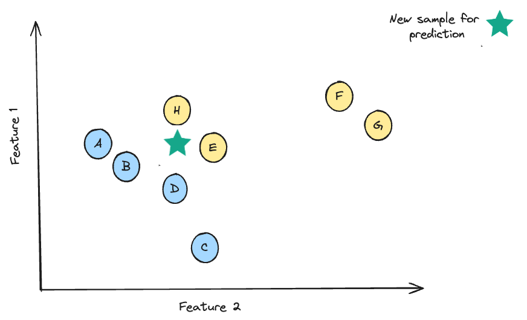
2.1 Fonctionnement
Pour la classification : vote majoritaire parmi les K voisins
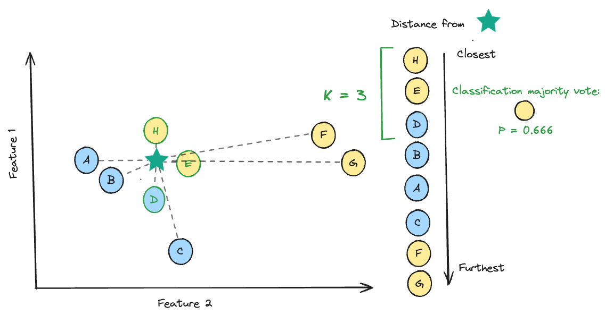
Pour la régression : moyenne des valeurs y des K voisins
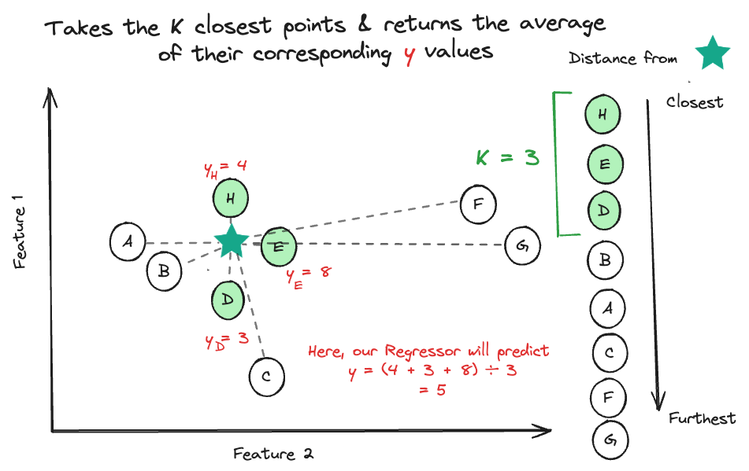
2.2 Choisir K
| K faible | K élevé |
|---|---|
| Peu d'observations utilisées | Signal dilué |
| Sujet à l'overfitting | Sujet à l'underfitting |
| Frontières très irrégulières | Frontières très lisses |
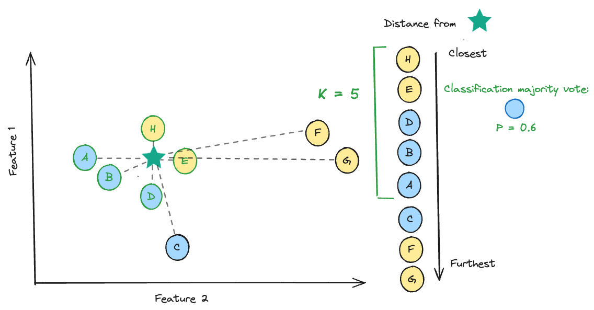
2.3 Hyperparamètres sklearn
KNeighborsClassifier(
n_neighbors=5, # K : nombre de voisins
weights='uniform', # 'uniform' = poids égaux | 'distance' = plus de poids aux voisins proches
p=2 # 2 = distance euclidienne | 1 = distance Manhattan
)2.4 Usages de KNN
from sklearn.neighbors import KNeighborsRegressor, KNeighborsClassifier, NearestNeighbors
from sklearn.impute import KNNImputer
KNeighborsRegressor() # régression
KNeighborsClassifier() # classification
NearestNeighbors() # détection de similarité / clustering
KNNImputer() # imputation de valeurs manquantes via KNN3) Cycle de vie du modèle & Baseline
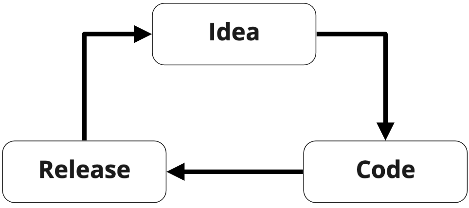
3.1 Score baseline
Avant tout modèle complexe, établir un score de référence avec des stratégies naïves :
- Régression : prédire toujours la moyenne / médiane
- Classification : prédire toujours la classe la plus fréquente
from sklearn.dummy import DummyRegressor
from sklearn.linear_model import LinearRegression
from sklearn.model_selection import train_test_split
X_train, X_test, y_train, y_test = train_test_split(X, y, test_size=0.3, random_state=6)
## Baseline : prédit toujours la moyenne
baseline_model = DummyRegressor(strategy="mean")
baseline_model.fit(X_train, y_train)
baseline_model.score(X_test, y_test) # → ~0.001 (quasi nul)## Modèle réel pour comparaison
model = LinearRegression().fit(X_train, y_train)
model.score(X_test, y_test) # → ~0.77 (bien supérieur à la baseline)La baseline permet de détecter rapidement les obstacles dans le pipeline avant d'itérer vers des modèles plus complexes.
4) Métriques de régression
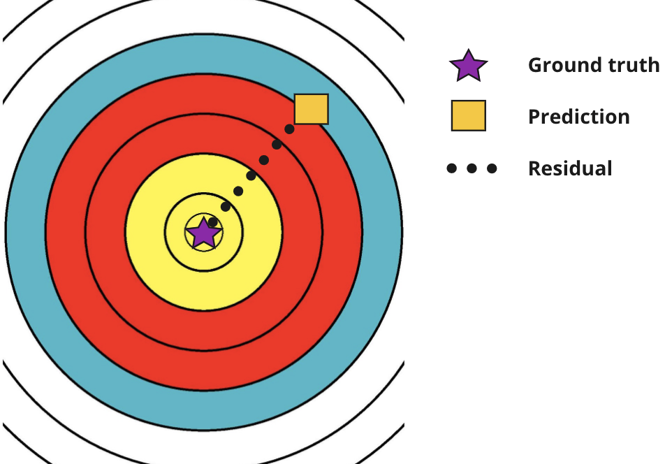
4.1 MSE — Mean Squared Error
$MSE = \frac{1}{n} \sum_{i=1}^{n} (y_i - \hat{y}_i)^2$
- Pénalise fortement les grandes erreurs (carré)
- Pas dans l'unité du target
- Très sensible aux outliers
👉 À utiliser quand les grandes erreurs sont disproportionnellement coûteuses (ex: essais cliniques)
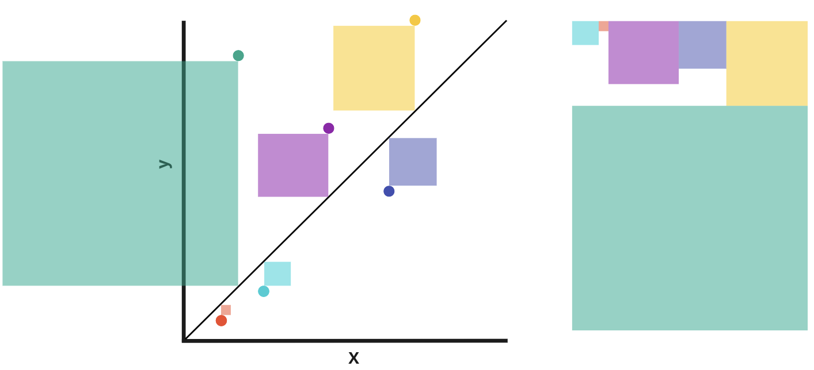
4.2 RMSE — Root Mean Squared Error
$RMSE = \sqrt{\frac{1}{n} \sum_{i=1}^{n} (y_i - \hat{y}_i)^2}$
👉 Même logique que MSE mais dans l'unité du target → plus interprétable
4.3 MAE — Mean Absolute Error
$MAE = \frac{1}{n} \sum_{i=1}^{n} |y_i - \hat{y}_i|$
- Moins sensible aux outliers que MSE
- Erreurs pénalisées proportionnellement à leur taille
👉 À utiliser quand toutes les erreurs ont une importance proportionnelle (ex: météo)
4.4 Max Error
$ME = \max_{i=1}^{n} |y_i - \hat{y}_i|$
👉 À utiliser quand on veut limiter la magnitude maximale d'une erreur (ex: température max d'un équipement)
4.5 R² — Coefficient de détermination
$R^2 = 1 - \frac{\sum_{i=1}^{n}(y_i - \hat{y}_i)^2}{\sum_{i=1}^{n}(y_i - \bar{y})^2}$
- Proportion de variance expliquée par le modèle
- Plage typique : $[0, 1]$ — score optimal = 1
- Indépendant des unités → comparaison entre datasets
👉 À utiliser comme métrique générale de qualité d'ajustement
4.6 Code — Calculer toutes les métriques
from sklearn.metrics import mean_squared_error, mean_absolute_error, r2_score, max_error
import math
mse = mean_squared_error(y_true, y_pred) # → 36776200.68
rmse = math.sqrt(mse) # → 6064.34
mae = mean_absolute_error(y_true, y_pred) # → 4234.0
r2 = r2_score(y_true, y_pred) # → 0.75
me = max_error(y_true, y_pred) # → 29184.77
print('MSE =', round(mse, 2))
print('RMSE =', round(rmse, 2))
print('MAE =', round(mae, 2))
print('R2 =', round(r2, 2))
print('Max Error =', round(me, 2))4.7 Cross-validation avec métriques multiples
from sklearn.model_selection import cross_validate
model = LinearRegression()
cv_results = cross_validate(
model, X, y, cv=5,
scoring=['max_error', 'r2', 'neg_mean_absolute_error', 'neg_mean_squared_error']
) # retourne un dict avec les scores par fold
cv_results['test_r2'].mean() # → ~0.747Pour voir toutes les métriques disponibles : 👉 sklearn.metrics.SCORERS.keys()
4.8 Quand utiliser quelle métrique ?
| Métrique | Utiliser quand... |
|---|---|
| MSE | Grandes erreurs doivent être plus pénalisées |
| RMSE | Comme MSE, mais résultat dans l'unité du target |
| MAE | Toutes les erreurs ont une importance proportionnelle |
| Max Error | On veut limiter la magnitude maximale d'une erreur |
| R² | Métrique générale de goodness-of-fit, comparaison inter-datasets |
5) Métriques de classification
5.1 Les 4 cas possibles
| Prédit ✅ | Prédit ❌ | |
|---|---|---|
| Réel ✅ | TP — Vrai Positif | FN — Faux Négatif |
| Réel ❌ | FP — Faux Positif | TN — Vrai Négatif |
5.2 Matrice de confusion
import pandas as pd
y_test = [0, 1, 0, 0, 1, 0, 1, 1, 0, 1] # vérités terrain
preds = [0, 0, 0, 0, 1, 1, 1, 1, 1, 1] # prédictions du modèle
results_df = pd.DataFrame({"actual": y_test, "predicted": preds})
confusion_matrix = pd.crosstab(
index=results_df['actual'],
columns=results_df['predicted']
) # lignes = valeurs réelles, colonnes = valeurs prédites👉 pandas.crosstab documentation
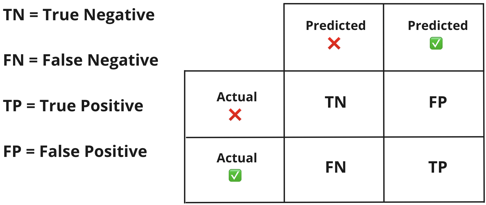
5.3 Accuracy
$accuracy = \frac{TP + TN}{TP + TN + FP + FN}$
👉 À utiliser quand les classes sont équilibrées et que chaque classe est également importante.
Sur un dataset déséquilibré (ex: 90% négatif), l'accuracy peut être trompeuse — un modèle qui prédit toujours ❌ obtient 91% d'accuracy mais recall = 0.10.
👉 sklearn.metrics.accuracy_score
5.4 Recall (Sensibilité)
$recall = \frac{TP}{TP + FN}$
Mesure la capacité à détecter tous les positifs (minimise les faux négatifs).
👉 À utiliser quand rater un positif est très coûteux : détection de fraude, dépistage de maladie, leads commerciaux.
Recall élevé seul peut générer trop de fausses alarmes (FP élevé). Ex: une alarme incendie qui se déclenche trop souvent.
👉 sklearn.metrics.recall_score
5.5 Precision
$precision = \frac{TP}{TP + FP}$
Mesure la confiance du modèle quand il prédit positif (minimise les faux positifs).
👉 À utiliser quand déclencher une fausse alarme est coûteux : publicité ciblée, homologation médicament.
Precision élevée seule peut manquer beaucoup de vrais positifs (FN élevé).
👉 sklearn.metrics.precision_score
5.6 F1 Score
$F1 = 2 \cdot \frac{precision \times recall}{precision + recall}$
Moyenne harmonique de la precision et du recall — plus influencé par la valeur la plus basse des deux.
👉 À utiliser comme métrique générale, notamment pour comparer des modèles sur des datasets déséquilibrés.
5.7 Code — Toutes les métriques de classification
from sklearn.metrics import accuracy_score, precision_score, recall_score, f1_score
y_true = [0, 1, 0, 0, 1, 0, 1, 1, 0, 1]
y_pred = [0, 0, 0, 0, 1, 1, 1, 1, 1, 1]
print('Accuracy =', round(accuracy_score(y_true, y_pred), 2)) # → 0.7
print('Precision =', round(precision_score(y_true, y_pred), 2)) # → 0.67
print('Recall =', round(recall_score(y_true, y_pred), 2)) # → 0.8
print('F1 score =', round(f1_score(y_true, y_pred), 2)) # → 0.735.8 Tableau récapitulatif
| Métrique | Formule | Utiliser quand... |
|---|---|---|
| Accuracy | (TP+TN)/total | Classes équilibrées, importance égale |
| Recall | TP/(TP+FN) | Minimiser les faux négatifs (ex: maladie, fraude) |
| Precision | TP/(TP+FP) | Minimiser les faux positifs (ex: médicament, pub) |
| F1 Score | 2·P·R/(P+R) | Compromis precision/recall, comparaison générale |
| ROC-AUC | Aire sous ROC | Robustesse générale, indépendant du seuil |
6) Tradeoff Precision–Recall & Ajustement du seuil
Il existe une relation inverse entre precision et recall : augmenter l'un diminue l'autre.
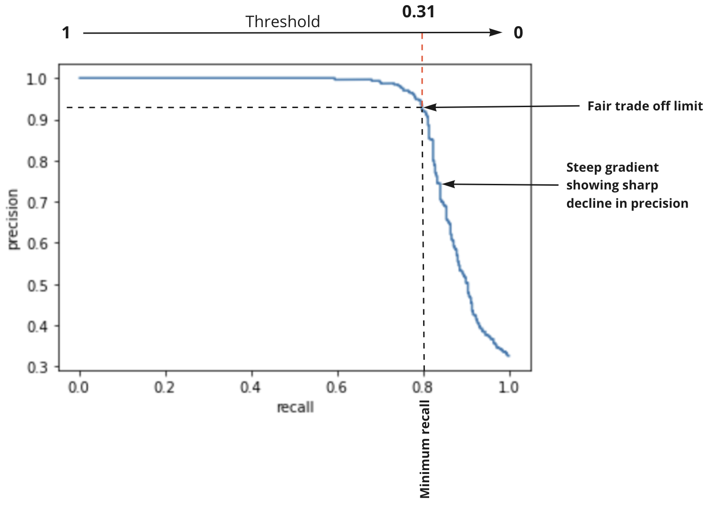
6.1 Courbe Precision-Recall
from sklearn.preprocessing import LabelEncoder
from sklearn.linear_model import LogisticRegression
from sklearn.model_selection import cross_val_predict
from sklearn.metrics import precision_recall_curve
## Encoder le target
le = LabelEncoder()
y_encoded = le.fit_transform(data['price_range']) # cheap=0, expensive=1
## Obtenir les probabilités via cross-validation
proba = cross_val_predict(model, X, y_encoded, cv=5, method='predict_proba')
proba_expensive = proba[:, 1] # probabilités de la classe "expensive" (classe 1)
## Calculer la courbe precision-recall
precision, recall, thresholds = precision_recall_curve(y_encoded, proba_expensive)
## Stocker dans un DataFrame pour analyse
scores = pd.DataFrame({
'threshold': thresholds,
'precision': precision[:-1], # dernière valeur ignorée (artefact sklearn)
'recall': recall[:-1]
})6.2 Trouver et appliquer un seuil optimal
## Trouver le seuil garantissant recall >= 0.80
optimal_threshold = scores[scores['recall'] >= 0.8].threshold.max() # → ~0.305
## Appliquer un seuil personnalisé
model.fit(X, y_encoded)
def custom_predict(X, custom_threshold):
probs = model.predict_proba(X)[:, 1] # probabilités classe positive
return (probs > custom_threshold).astype(int) # 1 si prob > seuil, sinon 0
updated_preds = custom_predict(X, custom_threshold=0.305)
from sklearn.metrics import recall_score, precision_score, f1_score
print("Recall:", recall_score(y_encoded, updated_preds)) # → 0.807
print("Precision:", precision_score(y_encoded, updated_preds)) # → 0.929
print("F1 Score:", f1_score(y_encoded, updated_preds)) # → 0.8647) ROC-AUC
La courbe ROC résume la capacité du modèle à arbitrer entre Taux de Vrais Positifs (TPR = recall) et Taux de Faux Positifs (FPR) à différents seuils.
$TPR = \frac{TP}{TP + FN} \qquad FPR = \frac{FP}{FP + TN}$
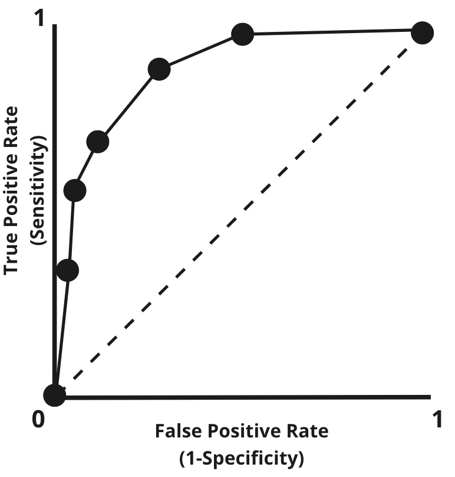
7.1 AUC — Area Under Curve
Plus l'aire est grande, meilleure est la performance globale du modèle.
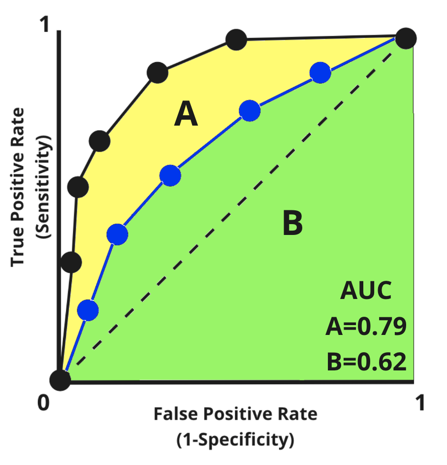
- AUC = 1.0 → modèle parfait
- AUC = 0.5 → modèle aléatoire (diagonale)
- Indépendant du seuil → idéal pour comparer des modèles
from sklearn.metrics import roc_curve, roc_auc_score
## Extraire les métriques ROC par seuil
fpr, tpr, thresholds = roc_curve(y_encoded, proba_expensive)
## Calculer l'AUC
auc_score = roc_auc_score(y_encoded, proba_expensive) # → ~0.909👉 sklearn.metrics.roc_auc_score
8) Analyse d'erreurs
Un processus itératif pour identifier les thèmes communs dans les erreurs du modèle.
Questions à se poser :
- Certains sous-groupes (cohorts) dans X sont-ils mieux ou moins bien prédits ?
- Une classe est-elle systématiquement mieux identifiée que les autres ?
- Certaines erreurs très larges dégradent-elles la performance globale ?
Chaque métrique ne raconte qu'une partie de l'histoire. Investiguer la performance du modèle sous plusieurs angles avant de conclure.
Ces analyses peuvent conduire à : collecte de données supplémentaires, feature engineering ciblé, ajustement du seuil de décision.
📚 Ressources
👉 sklearn.dummy.DummyRegressor
👉 sklearn.metrics — toutes les métriques de régression
👉 sklearn.metrics.accuracy_score
👉 sklearn.metrics.recall_score
👉 sklearn.metrics.precision_score
- 🧭 Introduction
- 1. Rappels — Préparer les données avant de modéliser
- 2. K-Nearest Neighbors (KNN)
- 3. Baseline — Le score plancher à battre
- 4. Métriques de régression
- 4.1 MSE — Mean Squared Error (Erreur quadratique moyenne)
- 4.2 RMSE — Root Mean Squared Error
- 4.3 MAE — Mean Absolute Error (Erreur absolue moyenne)
- 4.4 Max Error (Erreur maximale)
- 4.5 R² — Coefficient de détermination
- 4.6 Code — Calculer toutes les métriques de régression
- 4.7 Cross-validation avec plusieurs métriques à la fois
- 4.8 Tableau récapitulatif — Métriques de régression
- 5. Métriques de classification
- 6. Tradeoff Precision–Recall et ajustement du seuil
- 7. Courbe ROC et AUC
- 8. Analyse d'erreurs
- 🎯 Questions de vérification
- 📌 TL;DR
🧭 Introduction
Quand tu entraînes un modèle de Machine Learning, comment savoir s'il est bon ? Comment mesurer "bon" ? C'est exactement le rôle des métriques de performance : ce sont des chiffres qui résument, de manière objective, à quel point ton modèle se trompe (ou non).
Ce cours couvre les métriques les plus importantes :
- En régression (prédire un nombre) : MSE, RMSE, MAE, Max Error, R²
- En classification (prédire une catégorie) : Accuracy, Precision, Recall, F1 Score, ROC-AUC
- La matrice de confusion : un tableau qui détaille les erreurs
- La notion de baseline : le point de référence minimal
- L'algorithme KNN (K plus proches voisins), souvent utilisé comme premier modèle de référence
A retenir absolument
- Une seule métrique ne suffit jamais à tout dire sur un modèle.
- Sur des données déséquilibrées (ex : 95% de "non-malade"), l'Accuracy peut être totalement trompeuse.
- Il faut toujours commencer par établir une baseline avant de jubiler sur un score.
- Chaque métrique répond à une question métier précise — choisir la bonne, c'est comprendre le coût de chaque type d'erreur.
- Le seuil de décision d'un modèle de classification est réglable : on peut privilégier moins de faux positifs ou moins de faux négatifs selon le contexte.
L'analogie fil rouge : le test médical
Imagine un test de dépistage d'une maladie grave.
- Vrai Positif (TP) : le patient est malade, le test dit "malade". Parfait.
- Vrai Négatif (TN) : le patient est sain, le test dit "sain". Parfait.
- Faux Positif (FP) : le patient est sain, mais le test dit "malade". Il va stresser inutilement et subir des examens supplémentaires coûteux.
- Faux Négatif (FN) : le patient est malade, mais le test dit "sain". Il rentre chez lui sans traitement. C'est potentiellement catastrophique.
Ces 4 cas sont au coeur de toutes les métriques de classification. On y reviendra constamment tout au long du cours.
Mini-plan du cours
- Rappels preprocessing et introduction à KNN
- Baseline : le score plancher à battre
- Métriques de régression (MSE, RMSE, MAE, Max Error, R²)
- Métriques de classification (Accuracy, Recall, Precision, F1)
- Tradeoff Precision–Recall et ajustement du seuil
- Courbe ROC et AUC
- Analyse d'erreurs
1. Rappels — Préparer les données avant de modéliser
Avant même de parler de métriques, les données doivent être propres. Voici un résumé des étapes clés de préparation :
| Problème | Solution sklearn / pandas |
|---|---|
| Valeurs manquantes | Détecter avec .isnull(), supprimer avec .dropna(), imputer avec SimpleImputer |
| Features sur des échelles très différentes | StandardScaler, MinMaxScaler, RobustScaler |
| Valeurs aberrantes (outliers) | Visualiser avec boxplot, décider de supprimer ou conserver |
| Variables textuelles / catégorielles | OrdinalEncoder, OneHotEncoder, LabelEncoder |
| Classes déséquilibrées | Oversampling, Undersampling, SMOTE |
| Feature engineering | Créer de nouvelles colonnes pertinentes (ex : âge calculé depuis une date) |
Le scaling est OBLIGATOIRE pour KNN. Sans scaling, une feature exprimée en milliers (ex : revenus) va écraser une feature en unités (ex : nombre d'enfants) dans le calcul des distances.
2. K-Nearest Neighbors (KNN)
2.1 L'idée intuitive
KNN est l'un des algorithmes les plus simples qui soit. Son principe : "dis-moi qui sont tes voisins, je te dirai qui tu es".
Pour prédire la valeur d'un nouveau point, KNN regarde les $K$ points d'entraînement les plus proches (ses "voisins") et :
- En classification : il fait voter les voisins, la classe majoritaire l'emporte
- En régression : il calcule la moyenne des valeurs $y$ des voisins
$K$ est un hyperparamètre : tu dois le choisir toi-même, il ne s'apprend pas automatiquement.
2.2 Comment KNN mesure la "proximité" ?
Par défaut, KNN utilise la distance euclidienne (le paramètre p=2 dans sklearn), c'est-à-dire la distance "à vol d'oiseau" entre deux points.
Exemple concret : si tu as deux patients décrits par leur âge (40 ans vs 42 ans) et leur poids (70 kg vs 85 kg), la distance euclidienne est :
Remarque : le poids (en kg) domine largement l'âge (en années) car les valeurs sont plus grandes. C'est pourquoi il FAUT scaler avant KNN : pour que chaque feature pèse le même poids dans la distance.
2.3 Choisir K : ni trop petit, ni trop grand
| K petit (ex : K=1) | K grand (ex : K=100) |
|---|---|
| Le modèle suit chaque point d'entraînement | Le modèle moyennise trop, il est "aveugle" |
| Overfitting : parfait en train, mauvais en test | Underfitting : trop simple, il rate les patterns |
| Frontières de décision irrégulières | Frontières très lisses |
La bonne pratique : tester plusieurs valeurs de $K$ avec une cross-validation et garder celle qui minimise l'erreur de validation.
2.4 Code KNN avec sklearn
from sklearn.neighbors import KNeighborsClassifier, KNeighborsRegressor
# --- Classification KNN ---
knn_clf = KNeighborsClassifier(
n_neighbors=5, # K = 5 voisins à consulter
weights='uniform', # chaque voisin a le même poids ('distance' = les proches pèsent plus)
p=2 # p=2 → distance euclidienne ; p=1 → distance Manhattan
)
knn_clf.fit(X_train, y_train) # entraînement = juste mémoriser les données
score_clf = knn_clf.score(X_test, y_test) # retourne l'accuracy par défaut
# --- Régression KNN ---
knn_reg = KNeighborsRegressor(n_neighbors=5)
knn_reg.fit(X_train, y_train)
score_reg = knn_reg.score(X_test, y_test) # retourne le R² par défautRécap : fit() ne fait rien de complexe pour KNN — il mémorise juste les données. La vraie logique s'exécute au moment de predict().
2.5 Autres usages de KNN
from sklearn.neighbors import NearestNeighbors
from sklearn.impute import KNNImputer
NearestNeighbors() # trouver des items similaires (recommandation, clustering)
KNNImputer() # imputer les valeurs manquantes par la moyenne des K voisins3. Baseline — Le score plancher à battre
Avant de lancer un modèle complexe, commence par définir une baseline : c'est le score d'un modèle "idiot" qui ne fait aucun effort.
- En régression : prédire toujours la moyenne de $y$
- En classification : prédire toujours la classe la plus fréquente
Si ton modèle ne fait pas mieux que cette baseline, c'est qu'il n'apprend rien d'utile.
from sklearn.dummy import DummyRegressor, DummyClassifier
from sklearn.linear_model import LinearRegression
from sklearn.model_selection import train_test_split
X_train, X_test, y_train, y_test = train_test_split(X, y, test_size=0.3, random_state=6)
# Baseline régression : prédit toujours la moyenne de y_train
baseline = DummyRegressor(strategy="mean")
baseline.fit(X_train, y_train)
score_baseline = baseline.score(X_test, y_test) # → ~0.001 (quasi nul, c'est normal)
# Vrai modèle
model = LinearRegression()
model.fit(X_train, y_train)
score_model = model.score(X_test, y_test) # → ~0.77 (bien supérieur à la baseline)# Baseline classification : prédit toujours la classe majoritaire
baseline_clf = DummyClassifier(strategy="most_frequent")
baseline_clf.fit(X_train, y_train)
score_clf_baseline = baseline_clf.score(X_test, y_test) # trompeusement élevé si déséquilibréExemple : si 90% des observations sont "non-spam", une baseline qui prédit toujours "non-spam" obtient 90% d'accuracy. Ton vrai modèle doit dépasser ce chiffre pour avoir de la valeur.
4. Métriques de régression
En régression, on prédit une valeur numérique continue (ex : le prix d'une maison, la température de demain). L'erreur est la différence entre la valeur réelle $y_i$ et la valeur prédite $\hat{y}_i$.
4.1 MSE — Mean Squared Error (Erreur quadratique moyenne)
Traduction : on calcule la différence entre valeur réelle et prédite, on la met au carré (pour punir les grosses erreurs plus fort), et on fait la moyenne.
Intuition : le carré fait que une erreur de 10 coûte 100, mais une erreur de 100 coûte 10 000. Les grandes erreurs sont donc punies de façon disproportionnée.
Exemple numérique : 3 prédictions avec des erreurs de +2, -3, +10.
L'erreur de 10 a largement dominé le calcul — c'est voulu.
Quand l'utiliser : quand les grandes erreurs sont particulièrement coûteuses (essais cliniques, prédictions financières critiques).
Le MSE n'est pas dans l'unité du target. Si tu prédis des prix en euros, le MSE sera en euros². C'est difficile à interpréter directement.
4.2 RMSE — Root Mean Squared Error
C'est simplement la racine carrée du MSE. Avantage : le résultat est dans la même unité que le target.
Exemple (suite) : $RMSE = \sqrt{37.7} \approx 6.14$ euros si on prédisait des prix.
RMSE est généralement préféré à MSE pour la communication des résultats, car il est directement interprétable : "en moyenne, le modèle se trompe d'environ 6 euros".
4.3 MAE — Mean Absolute Error (Erreur absolue moyenne)
On prend la valeur absolue de chaque erreur (on ignore le signe) et on fait la moyenne.
Exemple numérique (mêmes données que ci-dessus) :
Ici, toutes les erreurs pèsent proportionnellement à leur taille, sans sur-pénaliser les grandes erreurs.
Quand l'utiliser : quand toutes les erreurs ont une importance équivalente (prévision météo, stocks).
Comparaison MSE vs MAE : avec les mêmes données, MAE = 5 et RMSE ≈ 6.14. L'écart vient du fait que RMSE est "tiré vers le haut" par la grande erreur de 10. Plus l'écart entre MAE et RMSE est grand, plus il y a des erreurs extrêmes dans tes prédictions.
4.4 Max Error (Erreur maximale)
Simplement : quelle est la PIRE erreur commise par le modèle, sur l'ensemble du jeu de test ?
Exemple : avec des erreurs de 2, 3 et 10, la Max Error vaut 10.
Quand l'utiliser : quand une seule grande erreur peut être catastrophique et que tu veux garantir un "plafond" d'erreur (ex : température maximale d'un équipement industriel, dosage médical).
4.5 R² — Coefficient de détermination
Où $\bar{y}$ est la moyenne des valeurs réelles.
Intuition : le R² compare l'erreur de ton modèle (numérateur) à l'erreur d'un modèle "idiot" qui prédit toujours la moyenne (dénominateur).
- $R^2 = 1$ : ton modèle est parfait (erreur nulle)
- $R^2 = 0$ : ton modèle ne fait pas mieux que de prédire la moyenne (comme la baseline)
- $R^2 < 0$ : ton modèle est pire que la baseline (c'est mauvais signe)
Exemple : Un R² de 0.77 signifie que ton modèle explique 77% de la variabilité des données. Les 23% restants sont "inexpliqués" (bruit, features manquantes...).
Avantage clé : le R² est sans unité, ce qui permet de comparer la qualité de modèles sur des datasets différents.
4.6 Code — Calculer toutes les métriques de régression
from sklearn.metrics import mean_squared_error, mean_absolute_error, r2_score, max_error
import math
# Valeurs réelles et prédites (exemple)
y_true = [100, 200, 300, 400, 500]
y_pred = [110, 195, 280, 410, 480]
mse = mean_squared_error(y_true, y_pred) # → erreur quadratique moyenne
rmse = math.sqrt(mse) # → dans l'unité du target (ex : euros)
mae = mean_absolute_error(y_true, y_pred) # → erreur absolue moyenne, robuste aux outliers
r2 = r2_score(y_true, y_pred) # → proportion de variance expliquée [0, 1]
me = max_error(y_true, y_pred) # → la pire erreur commise
print('MSE =', round(mse, 2))
print('RMSE =', round(rmse, 2))
print('MAE =', round(mae, 2))
print('R² =', round(r2, 2))
print('Max Error =', round(me, 2))Récap : MSE/RMSE pénalisent les grosses erreurs, MAE est plus robuste, R² est universel pour comparer des modèles, Max Error protège contre le pire cas.
4.7 Cross-validation avec plusieurs métriques à la fois
from sklearn.model_selection import cross_validate
from sklearn.linear_model import LinearRegression
model = LinearRegression()
# Évaluer sur 5 folds avec 4 métriques en même temps
cv_results = cross_validate(
model, X, y,
cv=5, # découpe les données en 5 parties
scoring=[
'r2',
'neg_mean_absolute_error', # sklearn retourne des valeurs négatives pour les erreurs
'neg_mean_squared_error', # (convention : score = valeur à maximiser)
'max_error'
]
)
# Récupérer la moyenne du R² sur les 5 folds
print("R² moyen :", cv_results['test_r2'].mean()) # → ~0.747Pourquoi "neg_mean_absolute_error" et pas juste "mean_absolute_error" ? Sklearn s'attend à ce que tous les scores soient "à maximiser". Comme MAE et MSE sont "à minimiser", sklearn les retourne en négatif pour garder une convention cohérente. Pour retrouver la vraie valeur, multiplie par -1.
4.8 Tableau récapitulatif — Métriques de régression
| Métrique | Question à laquelle elle répond | Utiliser quand... |
|---|---|---|
| MSE | De combien se trompe-t-on en moyenne (penalité forte sur les grosses erreurs) ? | Les grandes erreurs sont très coûteuses |
| RMSE | Même chose, mais dans l'unité du target | Idem MSE, mais tu veux interpréter directement |
| MAE | De combien se trompe-t-on en moyenne (toutes erreurs équivalentes) ? | Toutes les erreurs se valent proportionnellement |
| Max Error | Quelle est la PIRE erreur possible ? | Tu dois garantir un plafond d'erreur |
| R² | Quelle part de la variabilité le modèle explique-t-il ? | Comparer des modèles entre eux, communiquer un score global |
5. Métriques de classification
En classification, on prédit une catégorie (oui/non, spam/pas spam, malade/sain). Pour évaluer la qualité d'un modèle de classification, il faut comprendre les 4 types de résultats possibles.
5.1 Les 4 cas possibles (et leur nom)
Revenons à notre analogie médicale :
| Le modèle prédit : POSITIF (malade) | Le modèle prédit : NÉGATIF (sain) | |
|---|---|---|
| Réalité : POSITIF (malade) | TP — Vrai Positif : correctement détecté | FN — Faux Négatif : raté ! le patient rentre sans traitement |
| Réalité : NÉGATIF (sain) | FP — Faux Positif : fausse alarme, stress inutile | TN — Vrai Négatif : correctement écarté |
Mémo pour ne pas confondre FP et FN :
- Faux Positif = le modèle dit "oui" alors que c'est "non" (fausse alarme)
- Faux Négatif = le modèle dit "non" alors que c'est "oui" (oubli, ratage)
5.2 La matrice de confusion
La matrice de confusion est un tableau qui résume ces 4 cas pour l'ensemble des prédictions. C'est l'outil de base pour comprendre où un modèle se trompe.
import pandas as pd
# Exemple : 10 patients, résultats réels et prédictions
y_test = [0, 1, 0, 0, 1, 0, 1, 1, 0, 1] # 0=sain, 1=malade (vérité terrain)
preds = [0, 0, 0, 0, 1, 1, 1, 1, 1, 1] # prédictions du modèle
results_df = pd.DataFrame({"actual": y_test, "predicted": preds})
# Construire la matrice : lignes = vrai label, colonnes = label prédit
confusion_matrix = pd.crosstab(
index=results_df['actual'], # lignes = valeurs réelles
columns=results_df['predicted'] # colonnes = valeurs prédites
)
print(confusion_matrix)Résultat attendu :
predicted 0 1
actual
0 3 2 ← 3 vrais négatifs, 2 faux positifs
1 1 4 ← 1 faux négatif, 4 vrais positifsLecture : sur les 5 patients réellement malades (ligne actual=1), le modèle en a correctement détecté 4 (TP=4) et en a raté 1 (FN=1).
5.3 Accuracy (Précision globale)
C'est le pourcentage de prédictions correctes, toutes classes confondues.
Exemple (avec nos 10 patients) :
Le modèle a bien classé 7 patients sur 10.
Quand l'utiliser : quand les classes sont équilibrées (autant de positifs que de négatifs) et que chaque type d'erreur coûte pareil.
Piege classique : sur un dataset avec 90% de patients sains, un modèle qui prédit TOUJOURS "sain" obtient 90% d'accuracy... mais détecte 0% des malades. L'accuracy seule est complètement trompeuse dans ce cas. C'est pourquoi on a besoin du Recall et de la Precision.
5.4 Recall (Rappel ou Sensibilité)
Traduction : parmi tous les cas réellement positifs, combien le modèle en a-t-il détectés ?
Exemple :
Le modèle a détecté 80% des vrais malades. Il en a raté 20% (1 patient sur 5).
Intuition : le Recall répond à la question "est-ce que je rate des positifs ?" Un Recall de 1.0 signifie qu'on n'en rate aucun. Un Recall de 0.10 signifie qu'on en rate 90%.
Quand l'utiliser : quand rater un positif est très coûteux — détection de maladie, fraude bancaire, détection de feux de forêt. Dans notre analogie médicale, un FN peut coûter une vie : on veut un Recall maximal.
Recall élevé seul ne suffit pas. Si le modèle dit "tout le monde est malade", le Recall est 1.0 (on ne rate aucun malade)... mais on envoie aussi tous les gens sains passer des examens inutiles. C'est là qu'intervient la Precision.
5.5 Precision (Précision)
Traduction : parmi toutes les fois où le modèle a prédit "positif", combien avait-il raison ?
Exemple :
Sur 6 prédictions "malade" du modèle, 4 étaient vraiment malades (67% de fiabilité).
Intuition : la Precision répond à "est-ce que mes alertes sont fiables ?" Une Precision de 1.0 signifie que chaque fois qu'on dit "positif", c'est vrai. Une Precision faible signifie beaucoup de fausses alarmes.
Quand l'utiliser : quand déclencher une fausse alarme est coûteux — publicité ciblée (dépenser un budget sur quelqu'un qui n'achètera pas), homologation d'un médicament, détection de spam (mettre un vrai email dans les spams).
Le tradeoff Precision/Recall : si tu dis "tout le monde est malade" → Recall=1, Precision basse. Si tu dis seulement "malade" quand tu es très sûr → Precision=1, mais tu rates beaucoup. On ne peut pas maximiser les deux en même temps, il faut choisir selon le contexte métier.
5.6 F1 Score
Le F1 est la moyenne harmonique de la Precision et du Recall. Il combine les deux en un seul chiffre, en pénalisant fortement si l'un des deux est très bas.
Exemple :
Pourquoi la moyenne harmonique plutôt que la moyenne arithmétique ? Si Precision=1.0 et Recall=0.01 (catastrophique), la moyenne arithmétique donnerait 0.505 (un score "correct" trompeur). La moyenne harmonique donnerait $\approx 0.02$ — beaucoup plus honnête.
Quand l'utiliser : en cas général, surtout sur des datasets déséquilibrés, pour comparer plusieurs modèles avec un seul chiffre.
5.7 Code — Toutes les métriques de classification
from sklearn.metrics import accuracy_score, precision_score, recall_score, f1_score
y_true = [0, 1, 0, 0, 1, 0, 1, 1, 0, 1] # vérités terrain
y_pred = [0, 0, 0, 0, 1, 1, 1, 1, 1, 1] # prédictions du modèle
# Calculer chaque métrique
acc = accuracy_score(y_true, y_pred) # proportion de prédictions correctes
prec = precision_score(y_true, y_pred) # fiabilité quand le modèle dit "positif"
rec = recall_score(y_true, y_pred) # capacité à ne pas rater les positifs
f1 = f1_score(y_true, y_pred) # équilibre precision/recall
print('Accuracy =', round(acc, 2)) # → 0.70
print('Precision =', round(prec, 2)) # → 0.67
print('Recall =', round(rec, 2)) # → 0.80
print('F1 Score =', round(f1, 2)) # → 0.73Récap : ces 4 fonctions prennent y_true (réalité) et y_pred (prédictions) et retournent un chiffre entre 0 et 1, où 1 est parfait.
5.8 Tableau récapitulatif — Métriques de classification
| Métrique | Formule | Question | Utiliser quand... |
|---|---|---|---|
| Accuracy | $(TP+TN)/(total)$ | Combien de prédictions correctes au total ? | Classes équilibrées |
| Recall | $TP/(TP+FN)$ | Est-ce qu'on rate des positifs ? | Rater un positif est très coûteux (maladie, fraude) |
| Precision | $TP/(TP+FP)$ | Quand on dit "positif", est-on fiable ? | Fausse alarme est coûteuse (pub, médicament) |
| F1 Score | $2 \cdot P \cdot R/(P+R)$ | Quel équilibre precision/recall ? | Comparaison générale, datasets déséquilibrés |
| ROC-AUC | Aire sous courbe ROC | Le modèle discrimine-t-il bien, peu importe le seuil ? | Comparer des modèles entre eux |
6. Tradeoff Precision–Recall et ajustement du seuil
6.1 Le seuil de décision
Un modèle de classification comme la régression logistique ne sort pas directement "0" ou "1" — il sort une probabilité entre 0 et 1. Par défaut, le seuil est fixé à 0.5 : si la probabilité estimée dépasse 0.5, le modèle prédit "positif".
Mais ce seuil est réglable. Si tu l'abaisses à 0.3, le modèle sera plus "prudent" et dira "positif" plus souvent : le Recall monte, mais la Precision baisse (plus de fausses alarmes). Si tu l'augmentes à 0.7, le modèle ne dira "positif" que lorsqu'il est très sûr : la Precision monte, mais le Recall baisse (plus de ratés).
Analogie : imagine une alarme incendie. Si tu règles le détecteur de fumée pour être très sensible (seuil bas), il se déclenche au moindre soupçon — tu détectes tous les vrais feux (Recall élevé), mais aussi beaucoup de fausses alarmes (Precision basse). Si tu le règles peu sensible (seuil haut), il ne se déclenche que pour les vrais feux importants (Precision élevée), mais il peut ne pas sonner pour un petit feu débutant (Recall bas).
6.2 Code — Courbe Precision-Recall et seuil optimal
from sklearn.preprocessing import LabelEncoder
from sklearn.linear_model import LogisticRegression
from sklearn.model_selection import cross_val_predict
from sklearn.metrics import precision_recall_curve, recall_score, precision_score, f1_score
import pandas as pd
# Encoder la cible en 0/1
le = LabelEncoder()
y_encoded = le.fit_transform(y) # ex: 'cheap'=0, 'expensive'=1
# Obtenir les PROBABILITÉS (pas juste 0/1) via cross-validation
# method='predict_proba' pour récupérer les proba au lieu des classes
proba = cross_val_predict(model, X, y_encoded, cv=5, method='predict_proba')
proba_positive = proba[:, 1] # colonne 1 = probabilités d'appartenir à la classe positive
# Calculer precision et recall pour chaque valeur de seuil possible
precision_vals, recall_vals, thresholds = precision_recall_curve(y_encoded, proba_positive)
# Stocker dans un DataFrame pour analyser
scores = pd.DataFrame({
'threshold': thresholds,
'precision': precision_vals[:-1], # dernier élément retiré (artefact sklearn)
'recall': recall_vals[:-1]
})
# Trouver le seuil qui garantit recall >= 0.80
# (on prend le threshold le plus ÉLEVÉ satisfaisant la contrainte → precision maximale)
optimal_threshold = scores[scores['recall'] >= 0.8]['threshold'].max()
print("Seuil optimal :", round(optimal_threshold, 3)) # → ~0.3056.3 Appliquer le seuil personnalisé
# Entraîner le modèle sur tout le dataset
model.fit(X, y_encoded)
# Fonction de prédiction avec seuil personnalisé
def custom_predict(X_data, custom_threshold):
probs = model.predict_proba(X_data)[:, 1] # probabilités classe positive
return (probs > custom_threshold).astype(int) # 1 si prob > seuil, sinon 0
# Prédire avec le seuil optimal trouvé
updated_preds = custom_predict(X, custom_threshold=0.305)
# Vérifier les nouvelles métriques
print("Recall :", round(recall_score(y_encoded, updated_preds), 3)) # → 0.807
print("Precision :", round(precision_score(y_encoded, updated_preds), 3)) # → 0.929
print("F1 Score :", round(f1_score(y_encoded, updated_preds), 3)) # → 0.864Récap : en abaissant le seuil de 0.5 à 0.305, on garantit un Recall de 80% tout en maintenant une Precision de 93%. Le seuil par défaut à 0.5 n'est pas toujours le meilleur choix.
7. Courbe ROC et AUC
7.1 Qu'est-ce que la courbe ROC ?
ROC signifie "Receiver Operating Characteristic". C'est une courbe qui montre le compromis entre :
- Le TPR (True Positive Rate = Recall) : proportion de vrais positifs détectés
- Le FPR (False Positive Rate) : proportion de faux positifs générés
La courbe ROC trace le TPR (axe Y) en fonction du FPR (axe X) pour tous les seuils possibles. Chaque point de la courbe correspond à un seuil de décision différent.
Interprétation :
- Un modèle parfait aurait un point dans le coin supérieur gauche (TPR=1, FPR=0) — il détecte tous les positifs sans aucune fausse alarme.
- La diagonale représente un modèle aléatoire (équivalent à lancer une pièce).
- Plus la courbe "monte" vers le coin supérieur gauche, meilleur est le modèle.
7.2 AUC — Area Under the Curve (Aire sous la courbe)
L'AUC est l'aire sous la courbe ROC. Elle résume la qualité globale du modèle en un seul chiffre.
- $AUC = 1.0$ → modèle parfait (sépare parfaitement les classes)
- $AUC = 0.5$ → modèle aléatoire (ne vaut rien)
- $AUC = 0.9$ → très bon modèle
Intuition : l'AUC représente la probabilité que le modèle attribue un score plus élevé à un positif aléatoire qu'à un négatif aléatoire. Un AUC de 0.91 signifie que dans 91% des comparaisons "un malade vs un sain", le modèle attribue bien la probabilité plus haute au malade.
Avantage clé : l'AUC est indépendante du seuil de décision. C'est donc idéal pour comparer deux modèles entre eux sans avoir à choisir un seuil.
7.3 Code — Courbe ROC et AUC
from sklearn.metrics import roc_curve, roc_auc_score
# Calculer les métriques ROC pour chaque seuil possible
fpr, tpr, thresholds = roc_curve(y_encoded, proba_positive)
# fpr : liste des taux de faux positifs (un par seuil)
# tpr : liste des taux de vrais positifs (un par seuil)
# Calculer l'AUC (aire sous la courbe)
auc_score = roc_auc_score(y_encoded, proba_positive)
print("AUC =", round(auc_score, 3)) # → ~0.909
# Tracer la courbe ROC (avec matplotlib)
import matplotlib.pyplot as plt
plt.plot(fpr, tpr, label=f"Modèle (AUC = {auc_score:.2f})") # courbe du modèle
plt.plot([0, 1], [0, 1], 'k--', label="Aléatoire (AUC = 0.5)") # ligne de référence
plt.xlabel("Taux de Faux Positifs (FPR)")
plt.ylabel("Taux de Vrais Positifs (TPR = Recall)")
plt.title("Courbe ROC")
plt.legend()
plt.show()Récap : roc_curve() prend les vraies étiquettes et les probabilités (pas les prédictions 0/1). roc_auc_score() retourne un chiffre entre 0.5 et 1.0 — plus il est proche de 1, meilleur est le modèle.
Bonne pratique : utilise l'AUC pour comparer des modèles entre eux (quel algorithme est meilleur ?), et la courbe Precision-Recall pour ajuster le seuil de décision selon tes besoins métier.
8. Analyse d'erreurs
Obtenir un bon score global, c'est bien — mais comprendre où et pour qui le modèle se trompe, c'est encore mieux.
Questions à se poser systématiquement :
- Certains sous-groupes (tranches d'âge, régions géographiques...) sont-ils moins bien prédits que d'autres ?
- Une classe est-elle systématiquement confondue avec une autre (ex : le modèle dit toujours "chat" quand c'est un "léopard") ?
- Y a-t-il quelques erreurs très larges qui tirent le score vers le bas, ou est-ce une erreur diffuse sur tous les exemples ?
Ces analyses peuvent déboucher sur :
- La collecte de données supplémentaires pour les sous-groupes sous-représentés
- Du feature engineering ciblé pour mieux distinguer les classes confondues
- L'ajustement du seuil de décision pour équilibrer Precision et Recall
Chaque métrique ne raconte qu'une partie de l'histoire. Un R² de 0.85 peut cacher quelques erreurs gigantesques sur des cas rares importants. Un Recall de 0.90 peut masquer une Precision catastrophique. Explore toujours plusieurs angles avant de conclure qu'un modèle est "bon".
🎯 Questions de vérification
Q1. Tu entraînes un modèle pour détecter des transactions frauduleuses. Dans ton dataset, 99% des transactions sont normales et 1% sont frauduleuses. Ton modèle prédit "normal" pour toutes les transactions et obtient 99% d'accuracy. Est-ce un bon modèle ? Quelle(s) métrique(s) devrais-tu regarder à la place ?
Q2. Tu dois choisir entre deux modèles pour détecter une maladie grave :
- Modèle A : Precision = 0.95, Recall = 0.55
- Modèle B : Precision = 0.70, Recall = 0.92
Lequel choisis-tu et pourquoi ? (Rappel : la maladie est grave et un diagnostic raté peut être fatal.)
Q3. Un collègue te dit "mon modèle KNN a un score de 0.88 sur le test set, c'est excellent !". Quelle est la première question que tu lui poses avant de valider ce résultat ?
Q4. Tu as un modèle de régression qui prédit les salaires. Le MAE est de 2 000 € et le RMSE est de 8 500 €. Que t'indique ce grand écart entre MAE et RMSE sur les erreurs de ton modèle ?
📌 TL;DR
- Les métriques de régression mesurent l'écart entre valeurs prédites et réelles : MSE/RMSE pénalisent les grandes erreurs, MAE est robuste aux outliers, R² mesure le % de variance expliquée.
- Les métriques de classification mesurent la qualité des prédictions catégorielles : Recall maximise la détection des positifs (minimise FN), Precision maximise la fiabilité des alertes (minimise FP), F1 équilibre les deux.
- La matrice de confusion est l'outil de base pour comprendre où un modèle se trompe.
- Accuracy seule = piège sur des datasets déséquilibrés : un modèle qui dit toujours "non" peut avoir 99% d'accuracy et 0% d'utilité.
- Toujours définir une baseline (DummyRegressor / DummyClassifier) avant d'évaluer un modèle réel.
- KNN est simple et efficace, mais exige un scaling préalable et le bon choix de $K$ (via cross-validation).
- Le seuil de décision d'un classificateur est réglable : baisser le seuil augmente le Recall, le monter augmente la Precision.
- L'AUC-ROC résume la performance d'un modèle de classification indépendamment du seuil — idéal pour comparer des modèles entre eux.
- L'analyse d'erreurs va au-delà des métriques globales : cherche les sous-groupes mal prédits et les erreurs systématiques.
A. Concepts du cours
Métriques de classification
Pour un problème binaire, la prédiction peut être correcte ou incorrecte de quatre manières. Tout part de la matrice de confusion :
| Réel positif | Réel négatif | |
|---|---|---|
| Prédit positif | TP (vrai positif) | FP (faux positif) |
| Prédit négatif | FN (faux négatif) | TN (vrai négatif) |
Vocabulaire :
- TP (True Positive) : le modèle dit "positif", et c'est vraiment positif → succès
- FP (False Positive) : le modèle dit "positif", mais c'est négatif → fausse alarme
- FN (False Negative) : le modèle dit "négatif", mais c'est positif → occasion ratée
- TN (True Negative) : le modèle dit "négatif", et c'est vraiment négatif → succès
À partir de ces 4 nombres, on construit toutes les métriques.
Exemple chiffré — détection de fraude sur 10 000 transactions :
| Vraie fraude | Pas fraude | |
|---|---|---|
| Prédit fraude | TP = 40 | FP = 60 |
| Prédit normal | FN = 10 | TN = 9 890 |
Calculs :
Lecture : fraction de prédictions correctes, peu importe la classe. Ici 99.3% — très élevé, mais trompeur car le dataset est déséquilibré.
Lecture : parmi toutes les transactions que le modèle a marquées comme fraudes, 40% étaient de vraies fraudes. Les 60% restants sont des fausses alarmes qui ennuient les clients.
Lecture : parmi toutes les vraies fraudes, 80% ont été détectées. On en a raté 20% (les 10 FN).
Lecture : moyenne harmonique de precision et recall. L'harmonique pénalise sévèrement le déséquilibre : si l'un des deux est très bas, le F1 tombe. Ici 0.53, très éloigné de l'accuracy 0.99 — on voit que le modèle est médiocre sur la classe qui nous intéresse.
Lecture : le F-beta généralise le F1 en pondérant recall et precision. Avec $\beta = 1$ on retombe sur F1. Avec $\beta > 1$ (par exemple $\beta = 2$), on favorise le recall. Avec $\beta < 1$ (par exemple $\beta = 0.5$), on favorise la precision. Choisissez $\beta$ selon le coût métier relatif des FP et FN.
from sklearn.metrics import (accuracy_score, precision_score, recall_score,
f1_score, classification_report, confusion_matrix)
print(classification_report(y_test, y_pred))
# precision / recall / f1-score / support pour chaque classe + moyennesAnalogie : la precision est la qualité d'un filet de pêche — quel pourcentage de ce que vous attrapez est vraiment du poisson (et non des branches). Le recall est la couverture — quel pourcentage de tous les poissons de l'étang vous attrapez. Vous pouvez maximiser l'un au détriment de l'autre, mais rarement les deux ensemble. Le F1 est un compromis qui pénalise les déséquilibres.
Confusion matrix
La matrice de confusion est l'outil de diagnostic le plus utile en classification. Elle révèle exactement où le modèle se trompe.
from sklearn.metrics import confusion_matrix
import seaborn as sns
cm = confusion_matrix(y_test, y_pred)
sns.heatmap(cm, annot=True, fmt="d", cmap="Blues",
xticklabels=["Pred Neg", "Pred Pos"],
yticklabels=["True Neg", "True Pos"])Pour une classification multi-classes (par exemple 10 classes), la matrice est 10×10 et révèle les confusions systématiques : "le modèle confond toujours 4 et 9" pointe immédiatement vers une faiblesse spécifique (et suggère d'ajouter des features ou du data augmentation ciblé).
Bonne pratique : tracez toujours la confusion matrix avant de calculer une métrique unique. Vous verrez en 5 secondes si votre 95% d'accuracy cache une catastrophe sur une classe minoritaire. C'est aussi la première chose que les recruteurs vérifient quand vous présentez un projet ML.
Métriques de régression
Pour la régression :
| Métrique | Formule | Quand l'utiliser | ||||
|---|---|---|---|---|---|---|
| MSE | $\frac{1}{n}\sum (y - \hat{y})^2$ | Pénalise fortement les grandes erreurs | ||||
| RMSE | $\sqrt{\text{MSE}}$ | Même unité que $y$, plus interprétable | ||||
| MAE | $\frac{1}{n}\sum | y - \hat{y} | $ | Robuste aux outliers | ||
| MAPE | $\frac{100}{n}\sum | y-\hat{y} | / | y | $ | En pourcentage, lisible |
| R² | $1 - \frac{\sum(y-\hat{y})^2}{\sum(y-\bar{y})^2}$ | Fraction de variance expliquée | ||||
| MSLE | $\frac{1}{n}\sum(\log(1+y) - \log(1+\hat{y}))^2$ | Pour valeurs très étalées (revenus) |
Lecture : la MSE met les erreurs au carré → un outlier à +100 compte comme 10 000. La RMSE remet ça en unité originale (si MSE=400, RMSE=20 €). La MAE somme les valeurs absolues → traite toutes les erreurs linéairement, plus robuste. La MAPE exprime l'erreur en % de la vraie valeur, utile quand $y$ couvre plusieurs ordres de grandeur.
from sklearn.metrics import mean_squared_error, mean_absolute_error, r2_score
import numpy as np
print(f"R² = {r2_score(y_test, y_pred):.3f}") # 0.85
print(f"RMSE = {np.sqrt(mean_squared_error(y_test, y_pred)):.2f}") # 12450
print(f"MAE = {mean_absolute_error(y_test, y_pred):.2f}") # 9820Choix selon le contexte :
- Outliers fréquents : MAE (résistant)
- Outliers à pénaliser fortement : MSE / RMSE
- Grande étendue de valeurs : MAPE ou MSLE (relatif)
- Communication non technique : R² (entre 0 et 1, intuitif)
Cross-validation
Une métrique sur un seul train/test split peut être trompeuse. La cross-validation moyenne plusieurs splits pour une estimation plus robuste.
from sklearn.model_selection import cross_val_score
scores = cross_val_score(model, X, y, cv=5, scoring="f1")
print(f"F1 = {scores.mean():.3f} ± {scores.std():.3f}")
# Exemple: F1 = 0.847 ± 0.013 (très stable)L'écart-type des scores indique la stabilité : un modèle avec 0.85 ± 0.02 est plus fiable qu'un autre à 0.86 ± 0.10.
| Type de CV | Quand l'utiliser |
|---|---|
| KFold | Régression, dataset i.i.d. |
| StratifiedKFold | Classification (préserve les proportions de classes) |
| TimeSeriesSplit | Séries temporelles (jamais fitter sur le futur) |
| GroupKFold | Données avec groupes (patients avec plusieurs visites) |
| LeaveOneOut | Très petits datasets (< 100 observations) |
B. Compléments avancés
Courbes ROC et PR
La courbe ROC trace le taux de vrais positifs (TPR = recall) contre le taux de faux positifs (FPR), à mesure qu'on varie le seuil de décision de 0 à 1.
Lecture : TPR est la proportion de vrais positifs qu'on capture (le recall). FPR est la proportion de négatifs qu'on marque à tort comme positifs. Quand on baisse le seuil, on capture plus de positifs (TPR monte) mais on fait plus de fausses alarmes (FPR monte aussi).
from sklearn.metrics import roc_curve, auc
fpr, tpr, thresholds = roc_curve(y_test, proba)
roc_auc = auc(fpr, tpr)L'AUC-ROC mesure l'aire sous cette courbe :
- AUC = 1 : classifieur parfait
- AUC = 0.5 : aléatoire (droite diagonale)
- AUC < 0.5 : pire qu'aléatoire (votre modèle est inversé — swapper les classes le corrige)
L'AUC-ROC a une interprétation probabiliste très élégante : c'est la probabilité que, pour un couple aléatoire (positif, négatif), le modèle donne un score plus élevé au positif. C'est une mesure invariante au seuil.
La courbe PR (Precision-Recall) trace precision contre recall. Elle est plus appropriée que la ROC pour les classes déséquilibrées, parce qu'elle ne fait pas illusion sur le grand nombre de vrais négatifs.
from sklearn.metrics import precision_recall_curve, average_precision_score
precision, recall, thresholds = precision_recall_curve(y_test, proba)
avg_precision = average_precision_score(y_test, proba)Question d'entretien : "Quelle est la différence entre ROC-AUC et PR-AUC, et laquelle préférer ?" Réponse : ROC-AUC est dominée par les vrais négatifs quand la classe positive est rare — un modèle très médiocre peut avoir ROC-AUC = 0.95. PR-AUC ne regarde que la classe positive et est plus stricte. Pour une fraude à 0.1%, ROC-AUC peut être 0.99 alors que PR-AUC n'est que 0.30. Toujours utiliser PR-AUC pour les classes déséquilibrées.
Métriques pour problèmes spécifiques
Multi-classes : trois manières d'agréger les métriques par classe.
| Stratégie | Méthode | Quand l'utiliser |
|---|---|---|
| Macro | Moyenne simple des métriques par classe | Toutes les classes ont la même importance |
| Weighted | Moyenne pondérée par le support | Refléter le poids réel des classes |
| Micro | Calcul global (somme des TP, FP, FN) | Quand on veut un score global |
f1_score(y, y_pred, average="macro") # égalité des classes
f1_score(y, y_pred, average="weighted") # poids par fréquence
f1_score(y, y_pred, average="micro") # équivalent à accuracy en multi-classeMulti-label (chaque instance peut avoir plusieurs labels) : Hamming loss, Jaccard score.
Information retrieval : MAP@K, NDCG@K, MRR — métriques pour systèmes de recommandation.
Détection d'objets : IoU (Intersection over Union), mAP (mean Average Precision).
Choix de la métrique business
La métrique que vous optimisez doit refléter le coût réel des erreurs.
Exemple 1 — Détection de fraude bancaire
- FN (fraude non détectée) = perte financière directe, 1 000 €
- FP (transaction légitime bloquée) = friction client, 50 €
Coût relatif : 20:1. On veut un seuil très bas → maximiser le recall, pas l'accuracy. Métrique : F2-score (qui pondère le recall 4× plus que la precision) ou PR-AUC.
Exemple 2 — Filtre spam
- FN (spam dans la boîte) = nuisance mineure
- FP (email légitime en spam) = catastrophe (perte d'opportunité business)
Coût relatif inverse. On veut un seuil très haut → maximiser la precision. Métrique : F0.5-score ou precision pure.
Exemple 3 — Prix immobilier
- Surestimation = bien invendable
- Sous-estimation = manque à gagner
Coût symétrique → MAE ou RMSE.
Bonne pratique : avant de choisir un modèle, chiffrez le coût de chaque type d'erreur en euros (ou en KPI business). Optimiser une métrique technique sans cette traduction donne souvent un modèle qui fait gagner des points de F1 mais perdre de l'argent. C'est ce qui distingue un data scientist orienté business d'un data scientist orienté Kaggle.
C. Questions de compréhension
Q1 : Pourquoi l'accuracy est-elle dangereuse pour les classes déséquilibrées, et par quoi la remplacer ?
💡 Voir l'indice
Baseline triviale.
✅ Voir la réponse
Sur un dataset où 99% des classes sont négatives, un classifieur trivial qui prédit toujours "négatif" obtient 99% d'accuracy — sans détecter aucun positif. Votre modèle peut sembler exceptionnel selon l'accuracy alors qu'il est inutile.
Métriques alternatives :
- F1-score : moyenne harmonique précision/recall, équilibre les deux
- PR-AUC : aire sous la courbe Precision-Recall, robuste au déséquilibre
- Recall sur la classe positive : combien de vrais positifs vous détectez
- MCC (Matthews Correlation Coefficient) : score équilibré entre -1 et 1 qui prend en compte les 4 cellules de la matrice de confusion
- Confusion matrix : visualiser TP/FP/TN/FN
Règle : sur un dataset déséquilibré, ne jamais rapporter l'accuracy seule. Toujours coupler avec une métrique sensible à la classe minoritaire.
Q2 : Quelle est la différence entre la moyenne arithmétique et la moyenne harmonique de précision/recall, et pourquoi le F1-score utilise-t-il l'harmonique ?
💡 Voir l'indice
Déséquilibre extrême.
✅ Voir la réponse
La moyenne arithmétique $(P+R)/2$ est égale à 0.5 si $P = 1$ et $R = 0$ — ce qui suggère qu'un modèle ultra-précis mais sans recall serait "moyen".
La moyenne harmonique $2 \cdot P \cdot R / (P + R)$ est égale à 0 dans ce même cas — elle pénalise sévèrement le déséquilibre.
Lecture : on multiplie précision et recall (produit), puis on divise par leur somme, le tout fois 2. Si l'un des deux est nul, le numérateur est nul donc F1 = 0. C'est exactement l'esprit du F1-score : un modèle est bon seulement si il est à la fois précis ET sensible.
Plus généralement, le F-beta score
permet de pondérer : $\beta = 1$ équilibre, $\beta < 1$ favorise la précision, $\beta > 1$ favorise le recall. $\beta$ représente à quel point on juge le recall plus important que la précision.
Q3 : Vous comparez deux modèles : A a ROC-AUC = 0.95, B a ROC-AUC = 0.93. Sur le même dataset, A a PR-AUC = 0.30 et B a PR-AUC = 0.55. Lequel choisir ?
💡 Voir l'indice
Déséquilibre et priorités.
✅ Voir la réponse
Très probablement modèle B. La grande différence entre ROC-AUC et PR-AUC suggère que le dataset est très déséquilibré (peu de positifs).
Dans ce cas, ROC-AUC est dominée par les vrais négatifs et donne une vision optimiste des deux modèles. PR-AUC se concentre sur la classe positive et révèle que B est nettement supérieur à A pour détecter les vrais positifs. Si votre objectif est de détecter la classe rare (fraude, maladie, anomalie), B est meilleur d'un facteur 1.83 (0.55 / 0.30).
Le 0.02 de différence sur ROC-AUC est cosmétique. Règle générale : si les deux métriques divergent, faites confiance à la PR-AUC pour les classes rares et regardez la confusion matrix pour confirmer.
Ressources additionnelles
- scikit-learn Metrics documentation
- Pattern Classification (Duda, Hart, Stork) — chapitre 9 sur l'évaluation
- Google ML Crash Course — Classification
- Machine Learning Mastery — Imbalanced Classification
- Tour of Evaluation Metrics for Imbalanced Classification — article approfondi